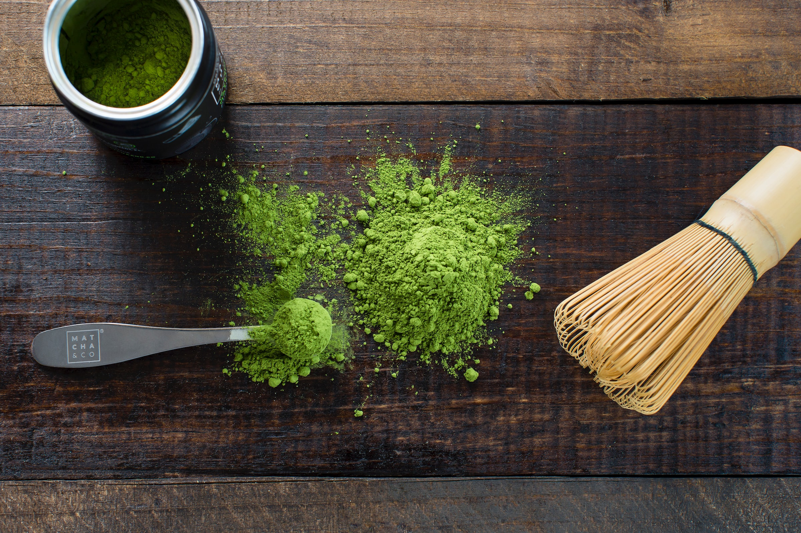

Matcha
Naoko TanibataMatcha (抹茶, English: /ˈmætʃə, ˈmɑːtʃə/) is finely ground powder of specially grown and processed green tea leaves, traditionally consumed in East Asia. The green tea plants used for matcha are shade-grown for three to four weeks before harvest; the stems and veins are removed during processing. During shaded growth, the plant Camellia sinensis produces more theanine and caffeine. The powdered form of matcha is consumed differently from tea leaves or tea bags, as it is suspended in a liquid, typically water or milk.
The traditional Japanese tea ceremony centers on the preparation, serving and drinking of matcha as hot tea, and embodies a meditative spirituality. In modern times, matcha is also used to flavor and dye foods, such as mochi and soba noodles, green tea ice cream, matcha lattes and a variety of Japanese wagashi confectionery. Matcha used in ceremonies is referred to as ceremonial-grade, meaning that the powder is of a high enough quality to be used in the tea ceremony. Lower-quality matcha is referred to as culinary-grade, but no standard industry definition or requirements exist for matcha.
Blends of matcha are given poetic names known as chamei ("tea names") either by the producing plantation, shop, or creator of the blend, or by the grand master of a particular tea tradition. When a blend is named by the grand master of a tea ceremony lineage, it becomes known as the master's konomi.
History
In China during the Tang dynasty (618–907), tea leaves were steamed and formed into tea bricks for storage and trade. The tea was prepared by roasting and pulverizing the tea, decocting the resulting tea powder in hot water, and then adding salt. During the Song dynasty (960–1279), the method of making powdered tea from steam-prepared dried tea leaves and preparing the beverage by whipping the tea powder and hot water together in a bowl became popular.
Preparation and consumption of powdered tea was formed into a ritual by Chan Buddhists. The earliest extant Chan monastic code, titled Chanyuan Qinggui (Rules of Purity for the Chan Monastery, 1103), describes in detail the etiquette for tea ceremonies.
Zen Buddhism and methods of preparing powdered tea were brought to Japan by Eisai in 1191. In Japan, it became an important item at Zen monasteries and from the 14th through the 16th centuries was highly appreciated by members of the upper echelons of society.
Production
Matcha is made from shade-grown tea leaves that also are used to make gyokuro. The preparation of matcha starts several weeks before harvest and may last up to 20 days, when the tea bushes are covered to prevent direct sunlight. This slows down growth, stimulates an increase in chlorophyll levels, turns the leaves a darker shade of green, and causes the production of amino acids, in particular theanine. After harvesting, if the leaves are rolled up before drying as in the production of sencha (煎茶), the result will be gyokuro (jade dew) tea. If the leaves are laid out flat to dry, however, they will crumble somewhat and become known as tencha (碾茶). Then, tencha may be deveined, destemmed, and stone-ground to the fine, bright green, talc-like powder known as matcha.
Grinding the leaves is a slow process because the mill stones must not get too warm, lest the aroma of the leaves be altered. Up to one hour may be needed to grind 30 grams of matcha.
flavour of matcha is dominated by its amino acids. The highest grades of matcha have a more intense sweetness and deeper flavour than the standard or coarser grades of tea harvested later in the year.